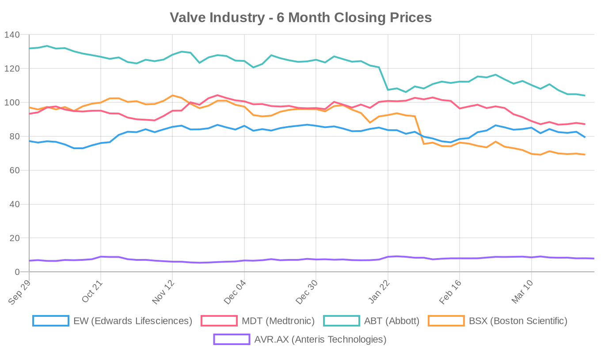
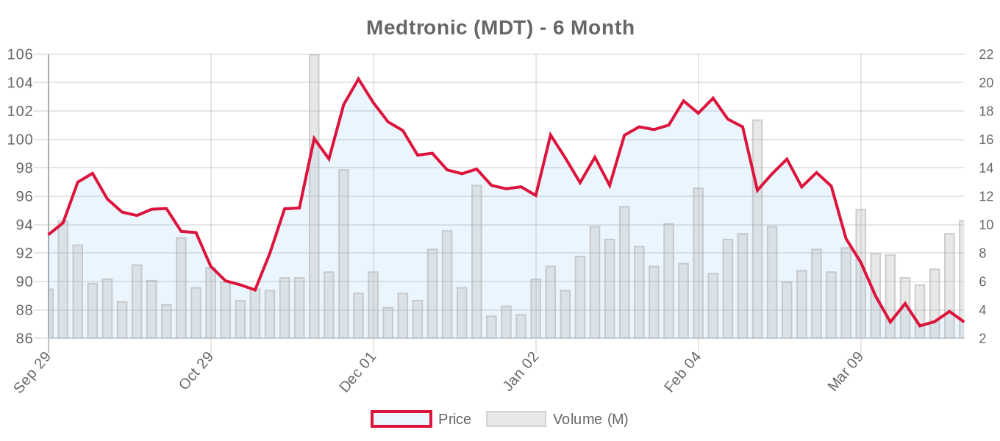
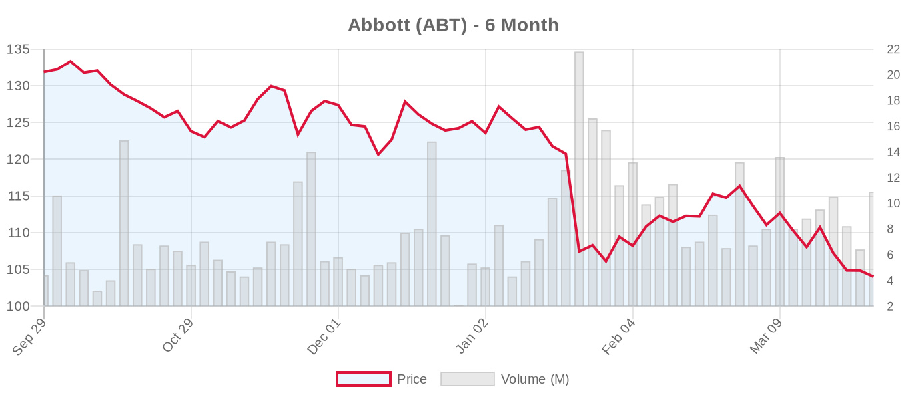
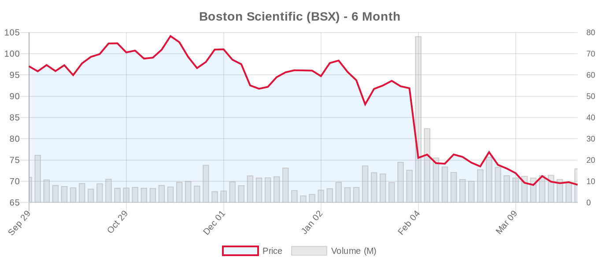

Week in Review
This week brought concerning questions about transcatheter device durability and patient selection across all valve positions. A large Medicare analysis found surgical tricuspid repair superior to transcatheter edge-to-edge repair for long-term outcomes despite higher perioperative risk, while mitral TEER showed high mortality rates in advanced heart failure patients who might benefit from mechanical support. Meanwhile, the FDA approved JenaValve's Trilogy system as the first dedicated TAVR device for aortic regurgitation, though questions remain about durability in this challenging indication. These developments underscore the ongoing tension between transcatheter innovation and the need for robust long-term evidence, particularly as these technologies expand into lower-risk populations where surgical alternatives remain well-established.
Top Stories This Week
Surgical Tricuspid Repair Outperforms Transcatheter Approach in Medicare Analysis
[NOTABLE] A comprehensive Medicare analysis of 2,761 patients comparing tricuspid transcatheter edge-to-edge repair (T-TEER) to surgical repair delivered sobering findings about transcatheter equivalence assumptions. Despite surgical repair showing higher hospital mortality (8.8% vs 2.1%), it provided superior 3-year survival (HR 0.76), reduced heart failure readmissions (HR 0.79), and fewer valve reinterventions (HR 0.83) compared to T-TEER. This challenges the growing enthusiasm for transcatheter tricuspid interventions and reinforces surgical opinion leaders' recent warnings about therapies outpacing evidence. The study's large sample size and rigorous risk adjustment strengthen its conclusions, though inherent limitations of administrative data warrant cautious interpretation. PMID: 41864530
High Mortality Rates in Advanced Heart Failure Patients Receiving Mitral TEER
[NOTABLE] The OCEAN-Mitral registry analysis revealed concerning outcomes for mitral TEER in patients who could theoretically benefit from LVAD therapy. Among 3,764 total M-TEER patients, 129 were identified as favorable LVAD candidates with advanced heart failure. Despite 96% procedural success, cardiovascular mortality reached 10.1% at one year and 38.9% at three years. These findings challenge the expanding use of M-TEER in advanced heart failure populations and suggest the procedure may provide symptomatic palliation rather than prognostic benefit in this subset, raising important questions about appropriate patient selection when mechanical circulatory support options exist. PMID: 41878851
FDA Approves First TAVR Device Specifically for Aortic Regurgitation
[NOTABLE] The FDA approved JenaValve's Trilogy transcatheter aortic valve replacement system specifically for treating aortic regurgitation, marking the first dedicated TAVR device for this indication available in the United States. This addresses a significant unmet need, as most current TAVR devices are optimized for stenotic disease. However, aortic regurgitation represents a more technically challenging indication with higher complication rates and uncertain long-term durability compared to stenotic disease. Real-world outcomes will require careful monitoring given the technical challenges inherent to treating regurgitant disease.
Comparative TAVR Platform Study Shows No Long-Term Survival Difference
Analysis of 587 urgent TAVR procedures found no significant long-term survival difference between self-expanding and balloon-expandable valves, despite balloon-expandable devices showing higher technical success (94.7% vs 88.8%) and lower moderate-severe paravalvular leak rates (2.3% vs 7.2%). The study's observational design and evolving device generations limit definitive conclusions about platform selection in urgent scenarios, though it suggests device selection should be based on anatomical factors rather than urgent presentation status. PMID: 41871786
Polymeric TAVR Valve Shows Promise in Preclinical Testing
Researchers developed a novel self-expanding TAVR device with siloxane poly(urethane-urea) leaflets, moving beyond traditional glutaraldehyde-fixed tissue. In nine ovine implants followed to 90 days, the polymeric valve showed stable hemodynamics, no paravalvular leak, and importantly, no calcification at explant. While promising for durability concerns plaguing current tissue valves, the preclinical nature and short follow-up limit clinical relevance. The technology requires extensive human testing to validate theoretical durability advantages. PMID: 41872486
Aortic Valve (TAVR/TAVI)
A multinational database study examined long-term outcomes of TAVR versus surgical AVR in patients with prior mediastinal radiation. After propensity matching 128 patients in each group, no significant differences were found in 5-year mortality (11.7% vs 12.5%), stroke, or hospitalization rates. While these observational results suggest TAVR may be reasonable in this high-risk population, the study's limitations include potential selection bias and the inherent challenges of adequately risk-adjusting radiation-exposed patients. PMID: 41868770
A novel "acute valve syndrome" study developed an Ischemic Physiology Score to stratify mortality risk in TAVR patients, identifying markers including renal dysfunction, elevated lactate, and liver injury. While the 65% prevalence of this high-risk phenotype highlights the evolution toward treating sicker patients, the study's retrospective design and single-center nature limit generalizability. PMID: 41868586
The comparative analysis of 369 patients with severe aortic regurgitation treated with either transapical TAVR using the J-Valve system or surgical replacement provides valuable insights into this challenging patient population. After propensity matching, 76 pairs showed no significant differences in 2-year mortality, cardiovascular death, or major complications. However, the TAVR group demonstrated superior hemodynamics with mean gradients of 6.7 versus 11.2 mmHg (p<0.001), while surgical patients showed greater ventricular dimensional regression. The study's single-center, retrospective design and specialized J-Valve platform limit generalizability, particularly given most TAVR systems weren't designed for pure regurgitation. PMID: 41871886
Mitral Valve (Repair & Replacement)
An updated meta-analysis of 2,588 patients across randomized trials and propensity-matched studies confirmed that mitral TEER reduces 12-month mortality (RR 0.74), cardiovascular mortality (RR 0.59), and heart failure hospitalizations (RR 0.64) compared to medical therapy alone in functional MR. However, TEER patients had significantly higher rates of MR recurrence (RR 2.20), raising questions about long-term durability that existing guidelines acknowledge but that many interventionalists may underemphasize. PMID: 41868764
A multicenter TMVR registry study found that larger annular dimensions and greater "Annular Area Loss" (difference between native annular area and prosthetic valve area) predicted one-year cardiac mortality. Patients with ≥2 risk factors had 25.5% mortality versus 1.9% for those with no risk factors. This suggests that comprehensive annular assessment beyond standard measurements may improve patient selection, though the study's observational design limits definitive conclusions. PMID: 41865959
A prospective study of 299 patients undergoing mitral edge-to-edge repair found that residual left atrial v-wave pressure after device implantation strongly predicted clinical outcomes, independent of echocardiographic mitral regurgitation grade. Patients with post-procedure v-wave pressure below 25 mmHg had favorable outcomes regardless of residual regurgitation severity. This finding challenges sole reliance on echocardiographic assessment but requires validation across centers and operators before changing practice patterns.
Chinese investigators reported successful use of mitral TEER for papillary muscle rupture following acute myocardial infarction in 12 high-risk patients, with 11 surviving to discharge. However, 2 patients died during 30-day follow-up and 1 required readmission for heart failure, illustrating both the potential and limitations of transcatheter therapy in this devastating complication. PMID: 41866208
Tricuspid Valve (Repair & Replacement)
Beyond the landmark Medicare comparison showing surgical superiority, a German study compared outcomes between transcatheter edge-to-edge repair (104 patients) and transcatheter valve replacement with the Cardiovalve system (10 patients) for severe tricuspid regurgitation. While TTVR achieved superior regurgitation reduction (80% vs 44.9% achieving grade 0-I), it was associated with significantly more access site bleeding (20% vs 1.96%). Both approaches showed similar functional improvement and no procedural mortality. The small TTVR group and device-specific findings limit generalizability, but highlight the trade-offs between different tricuspid interventions.
A case series from Poland details transcatheter tricuspid edge-to-edge repair for iatrogenic regurgitation following transvenous pacemaker lead extraction. Four patients with severe-torrential tricuspid regurgitation after lead extraction underwent T-TEER, with successful outcomes in three cases. The mechanisms included papillary muscle or chordal avulsion (three cases) and likely leaflet perforation (one case). This represents a growing application as pacemaker lead extraction procedures increase with device longevity concerns. PMID: 41877726
A biomechanical study using porcine hearts found that tricuspid TEER induces significant annular forces, with anterior-septal to posterior-septal two-clip interventions producing the maximum effect. While this "annuloplasty effect" may provide therapeutic benefit, the study's ex-vivo design limits clinical applicability and raises questions about long-term tissue effects. PMID: 41867840
Clinical Trials Update
Aortic Valve Trials
- NCT06420830: SAPIEN 3 Ultra RESILIA Valve Registry - RECRUITING, 150 patients, Institut universitaire de cardiologie et de pneumologie de Québec (updated March 27)
- NCT03383445: VIVA Trial (TAVR vs SAVR for small annuli) - ACTIVE_NOT_RECRUITING, 300 patients, Centre de Recherche Quebec (updated March 27)
- NCT07450196: SAPIEN 3 for Type-0 Bicuspid AS in China - NOT_YET_RECRUITING, 170 patients, Chinese Academy of Medical Sciences (updated March 27)
- NCT06455787: J-Valve Transfemoral Pivotal Study - RECRUITING, 194 patients, JC Medical/Edwards affiliate (updated March 25)
- [LANDMARK] NCT02701283: Evolut Low Risk long-term follow-up - ACTIVE_NOT_RECRUITING, 2,223 patients, Medtronic (updated March 19)
- NCT07317804: Echo-Guided vs Fluoroscopy-Guided TAVR - NOT_YET_RECRUITING, Phase 4, 212 patients, China National Center for Cardiovascular Diseases
- NCT07477002: Post-Dilatation Effect on TAVI Prostheses Expansion - RECRUITING, 146 patients, Medical University of Vienna
Mitral Repair Trials
- [LANDMARK] NCT04198870: REPAIR-MR (MitraClip vs surgery for primary MR) - ACTIVE_NOT_RECRUITING, 500 patients, Abbott Medical Devices
- [LANDMARK] NCT05051033: PRIMATY (MitraClip vs medical therapy for secondary MR) - RECRUITING, 450 patients, Mount Sinai
- [LANDMARK] NCT03706833: COAPT long-term follow-up - ACTIVE_NOT_RECRUITING, 1,247 patients, Edwards Lifesciences
Mitral Replacement Trials
- [LANDMARK] NCT03242642: Intrepid TMVR Pivotal - RECRUITING, 1,056 patients, Medtronic Cardiovascular
- [LANDMARK] NCT04101357: APOLLO (Tendyne TMVR) - TERMINATED, 54 patients
- [LANDMARK] NCT05490992: SAPIEN M3 TMVR Early Feasibility - COMPLETED, 2,448 patients
Tricuspid Repair Trials
- [LANDMARK] NCT03904147: TRILUMINATE Pivotal (TriClip for TR) - ACTIVE_NOT_RECRUITING, 572 patients, Abbott Medical Devices
- [LANDMARK] NCT04097145: CLASP II TR (PASCAL for TR) - RECRUITING, 870 patients, Edwards Lifesciences
Tricuspid Replacement Trials
- [LANDMARK] NCT04482062: TRISCEND II (Evoque tricuspid replacement) - ACTIVE_NOT_RECRUITING, 864 patients, Edwards Lifesciences
- [LANDMARK] NCT05071768: GATE Pivotal (NaviGate tricuspid replacement) - COMPLETED, 31 patients
Surgical vs. Transcatheter Comparisons
The week's most significant surgical versus transcatheter comparison came from the Medicare tricuspid repair analysis, providing real-world evidence that challenges the assumption of transcatheter equivalence in this valve position. The study's large sample size and rigorous risk adjustment strengthen its conclusions, though the inherent limitations of administrative data and potential unmeasured confounders warrant cautious interpretation. This finding aligns with recent surgical opinion leader warnings about transcatheter technologies outpacing robust evidence, particularly in complex anatomical locations like the tricuspid valve.
The mediastinal radiation TAVR study, while showing similar long-term outcomes to surgery, exemplifies the challenges of comparing approaches in highly selected populations where surgical risk may be genuinely prohibitive. The specialized J-Valve aortic regurgitation data suggests transcatheter approaches may achieve comparable clinical outcomes with superior hemodynamics, though the single-center design and device-specific findings limit broader applicability.
Valve Industry Stocks — Weekly Performance

Edwards Lifesciences (EW)

Weekly Performance: $79.34, down 4.29% for the week but maintaining +2.79% over six months ($72.30-$87.89 range). Market cap of $46.1B trades at 43.83x trailing P/E, reflecting premium valuations for structural heart leadership. With 26 analysts maintaining buy recommendations and a $97.12 average target (range $84-$110), the market expects 22% upside potential. Next earnings April 22 with $0.73 EPS estimate and $1.60B revenue projection will be crucial for validating growth expectations amid competitive pressures.
Medtronic (MDT)

Weekly Performance: $87.14, down 1.59% for the week and -6.59% over six months. The $111.9B company trades at more reasonable 24.34x trailing P/E with 25 analysts maintaining buy ratings and $111.08 target suggesting 27% upside. May 20 earnings ($1.64 EPS estimate, $9.65B revenue) will address whether the Evolut platform can compete effectively against Edwards' TAVR dominance.
Abbott (ABT)

Weekly Performance: $103.99, down 2.26% for the week and suffering a substantial -21.13% six-month decline. Despite the $180.7B company's diversified portfolio challenges, 25 analysts maintain buy ratings with a $132.64 target implying 28% recovery potential. April 16 earnings will be critical for assessing structural heart segment performance, particularly MitraClip's competitive position.
Boston Scientific (BSX)

Weekly Performance: $69.17, down 1.82% for the week, representing the worst performer with -28.72% over six months. Despite this severe decline, 32 analysts maintain strong buy ratings with a $102.00 target suggesting 47% upside potential — the largest disconnect between current price and analyst expectations. The $102.8B company's April 22 earnings ($0.79 EPS estimate, $5.19B revenue) will be crucial for demonstrating structural heart execution.
Anteris Technologies (AVR.AX)

Weekly Performance: AUD $7.90, down 1.25% for the week but maintaining +19.70% over six months as the small-cap valve developer advances its DurAVR anti-calcification technology. With limited analyst coverage (single $13.00 target), this represents high-risk, high-reward exposure to next-generation valve durability innovations.
Market Analysis: The structural heart sector continues facing headwinds from competitive dynamics and growth sustainability questions. The significant disconnect between current valuations and analyst targets across major players suggests potential recovery opportunities, though timing remains uncertain given broader healthcare sector challenges. Edwards' resilience relative to peers reflects confidence in TAVR market leadership, while the severe declines at Abbott and Boston Scientific may represent oversold conditions relative to long-term fundamentals.
Regulatory & Policy
Beyond the JenaValve Trilogy approval, CMS released proposed decision memos and tracking sheets for TAVR coverage (CAG-00430R2 and CAG-00430N), though specific coverage changes weren't detailed in available summaries. These regulatory updates reflect the ongoing evolution of reimbursement policies as TAVR applications expand beyond traditional high-risk populations. CMS Proposed Decision Memo
Philips received FDA clearance for its AI-powered catheterization lab co-pilot system, representing continued integration of artificial intelligence in interventional cardiology suites. While not directly valve-specific, this technology could impact procedural guidance for structural heart interventions, though clinical benefit remains to be demonstrated in controlled studies.
Weekend News
Weekend developments included academic publications examining TAVR safety in hematologic malignancy patients, highlighting the expanding patient populations considered for transcatheter interventions. JACC: Safety and Feasibility of TAVR in Hematologic Neoplasms provides insights into this specialized patient subset, though sample sizes remain limited.
Michigan Medicine published educational content on failed TAVR management, explaining explant procedures and surgical options — an important topic as the TAVR population ages and device durability questions emerge. Failed TAVR Management Guide
International expansion continues with Rajpuras Neelam Hospital in India introducing TAVI procedures, reflecting the global adoption of transcatheter technologies beyond traditional Western markets. Tribune India: TAVI Introduction
Week Ahead
Upcoming Catalysts:
- April 15: Abbott earnings — Critical for assessing structural heart portfolio performance amid competitive pressures
- April 22: Edwards Lifesciences and Boston Scientific earnings — Key tests of TAVR market dynamics and execution capabilities
- May 20: Medtronic earnings — Evolut platform performance against Edwards competition
- Q2 2026: Potential REPAIR-MR interim results — Could reshape primary mitral regurgitation treatment paradigms
- Ongoing: TRILUMINATE and CLASP II TR enrollment continuation — Building evidence base for tricuspid interventions
Conference activity may include late-breaking clinical trials at upcoming cardiology meetings, though no major conferences are scheduled for early April. The regulatory landscape continues evolving with CMS coverage decisions and potential FDA approvals for next-generation devices.
All Research & Sources This Week
Research Articles
- Medicare Analysis: Surgical vs Transcatheter Tricuspid Repair — PMID: 41864530, March 23
- Meta-analysis: Mitral TEER vs Medical Therapy — PMID: 41868764, March 23
- TMVR Registry: Annular Dimensions and Mortality — PMID: 41865959, March 23
- OCEAN-Mitral Registry: M-TEER in LVAD Candidates — PMID: 41878851, March 25
- Polymeric TAVR Valve Preclinical Study — PMID: 41872486, March 24
- Urgent TAVR: Balloon-expandable vs Self-expanding — PMID: 41871786, March 24
- J-Valve Transapical vs Surgery for Aortic Regurgitation — PMID: 41871886, March 25
- T-TEER for Iatrogenic Tricuspid Regurgitation — PMID: 41877726, March 25
- TAVR vs Surgery in Mediastinal Radiation — PMID: 41868770, March 23
- Tricuspid TEER Biomechanical Forces — PMID: 41867840, March 23
News
- JACC: TAVR Safety in Hematologic Neoplasms — JACC Journals, March 26
- Failed TAVR Management Guide — Michigan Medicine, March 27
- Hospital TAVI Program Launch — Tribune India, March 27
- CMS TAVR Proposed Decision Memo — CMS, March 26
Clinical Trials
- NCT06420830: SAPIEN 3 Ultra RESILIA Registry — Updated March 27
- NCT03383445: VIVA Trial — Updated March 27
- NCT07450196: SAPIEN 3 for Bicuspid AS — Updated March 27
- NCT04198870: REPAIR-MR — Abbott Medical Devices
- NCT05051033: PRIMATY — Mount Sinai
- NCT03904147: TRILUMINATE — Abbott Medical Devices
- NCT04482062: TRISCEND II — Edwards Lifesciences
This week's research reinforces the critical importance of rigorous patient selection and realistic expectations about transcatheter device durability, particularly as the field continues expanding into lower-risk populations and newer anatomical targets where surgical alternatives remain well-established with proven long-term outcomes.